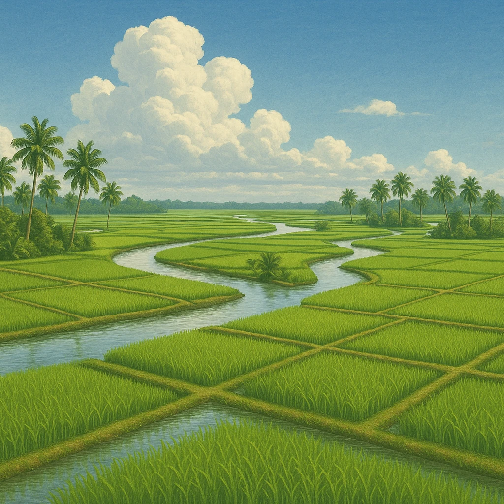
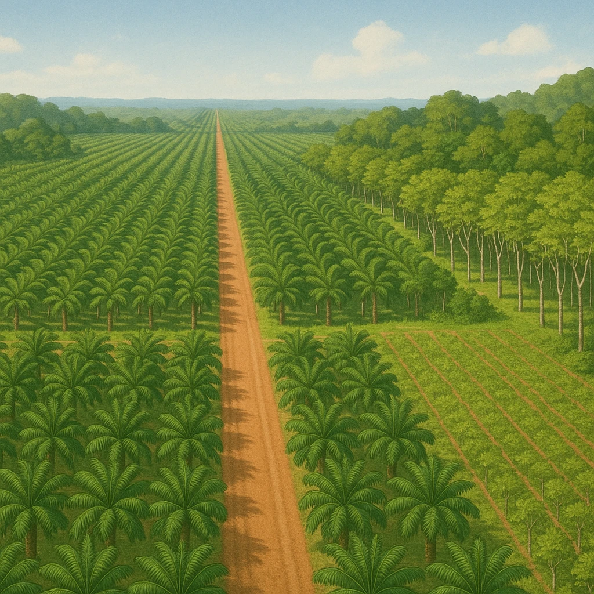

Ⅱ-2
東南アジアの農業
農業は
稲作
と
大農園
の二本立て

① 稲作
メコン川・チャオプラヤ川の
三角州
で米づくりが盛ん。タイやベトナムは
米の輸出大国
（世界有数）。

②
⑦
プランテーション
植民地時代に
欧米の資本
で開かれた大農園。
現地の人々を
安い賃金
でやとい、
輸出用の作物
（天然ゴム・パーム油など）を栽培する。
対比
米は
自分たちが食べる＋輸出
、大農園は
輸出でもうけるためのもの
。作物は次のスライドで。
第4章 アジア州
SEED EDUCATION